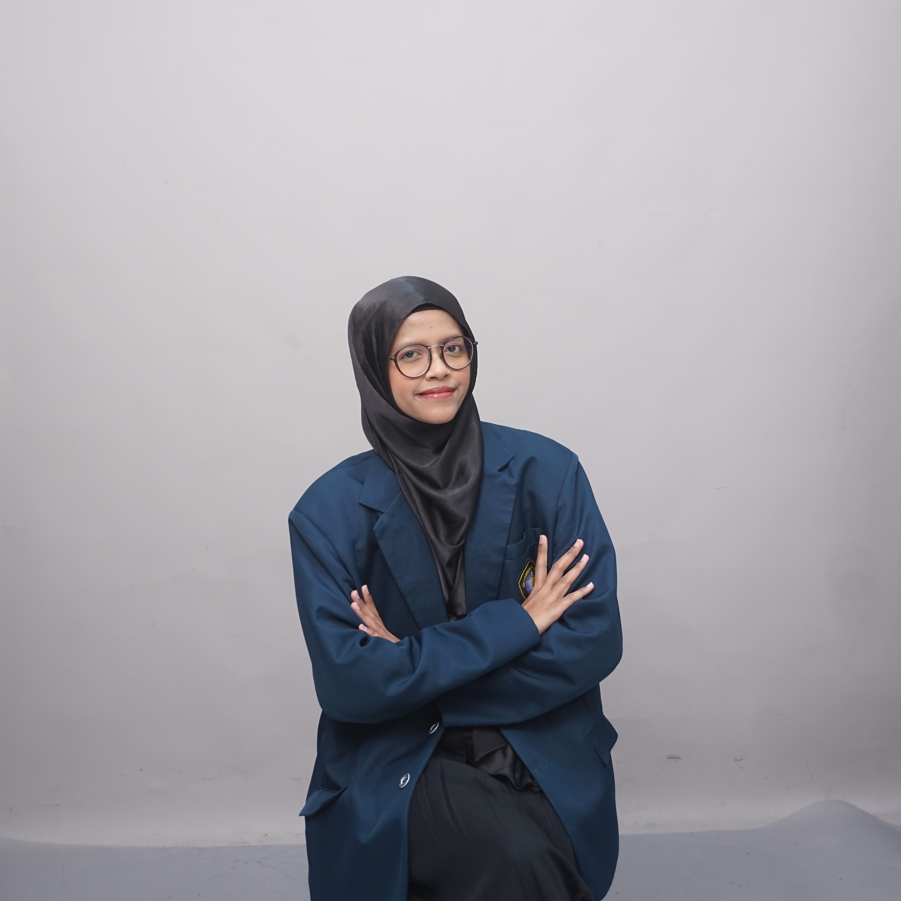

Exploring frontend development using HTML, CSS, and JavaScript, and learning data fundamentals including data processing and basic analysis.
An Information Technology student with a strong interest in frontend development and UI/UX design. Over the past five semesters, I have worked on various academic and personal projects involving web interfaces and UI design, utilizing HTML, CSS, JavaScript, Tailwind CSS, and Figma. Currently still in the learning phase and eager to gain practical experience and mentorship in a professional environment.
In addition to technical development, I am actively involved in student organizations and committees, where I have gained experience in teamwork, communication, and project coordination. These experiences have helped me develop responsibility, adaptability, and the ability to work collaboratively in dynamic environments.
Project Completion
Organization & Committees

Kombinasi teknologi modern dan tools andalan yang telah saya gunakan.
Berikut ini adalah kumpulan proyek akhir mata kuliah, lomba, dan proyek pribadi yang pernah saya kerjakan.
Mendedikasikan kemampuan non-teknis, kepemimpinan, dan kerjasama tim dalam berbagai wadah organisasi.
Tertarik untuk mendiskusikan peluang proyek baru, tawaran kerjasama, atau sekadar bertukar sapa di dunia web development?